Introducing design discipline to a live regulated fintech.
Payonus is a CBN-licensed pan-African B2B fintech PSSP. The merchant-facing web app — dashboard, wallets, settlement, onboarding — was originally built without a dedicated designer. The engineering team built exactly what was functionally needed, screen by screen, with no one owning the experience as a whole.
I led the first design-driven redesign of the product. This case study covers that work — the full merchant web app overhaul. My other design work at Payonus (checkout flows, OnUs Tag Transfer, cross-border payment UX) is covered separately in the Experience section.
My role
First dedicated designer on the product. Owned research, IA, visual design, and handoff — alongside my broader PM, brand, and business development responsibilities at Payonus.
Context
Live regulated product. Every change had to work within CBN compliance constraints while improving merchant comprehension and trust. No design system existed before I arrived.
Built to work. Not to be understood.
The original merchant dashboard led with a single flat "Transaction Summary" card — one large number, a row of dropdown filters, and no indication of what that number meant or what the merchant should do next. Wallet balances and settlement information lived on separate screens, so understanding "how much money can I actually move right now" meant navigating away from the dashboard entirely.
Transaction details had the same problem at a smaller scale. The detail modal listed every field — transaction ID, status, amount, channel, business name — at identical visual weight, in a single unbroken list. Finding one specific value meant reading the whole thing.
Settlement splitting, where merchants configure how incoming settlements divide across bank accounts, was a bare form: select a bank, enter an account name and number, enter a percentage. There was no way to see at a glance how much of the settlement was already allocated, how much remained, or whether a configuration was even active.
Onboarding compounded it. The original signup form put name, phone number, email, merchant type, and two password fields on one dense, unbroken screen — no progressive disclosure, no sense of how many steps remained.
None of this was a failure of engineering. It was the natural result of building a regulated fintech product with no one responsible for how it felt to use.
Four before/after decisions — and why each one matters.
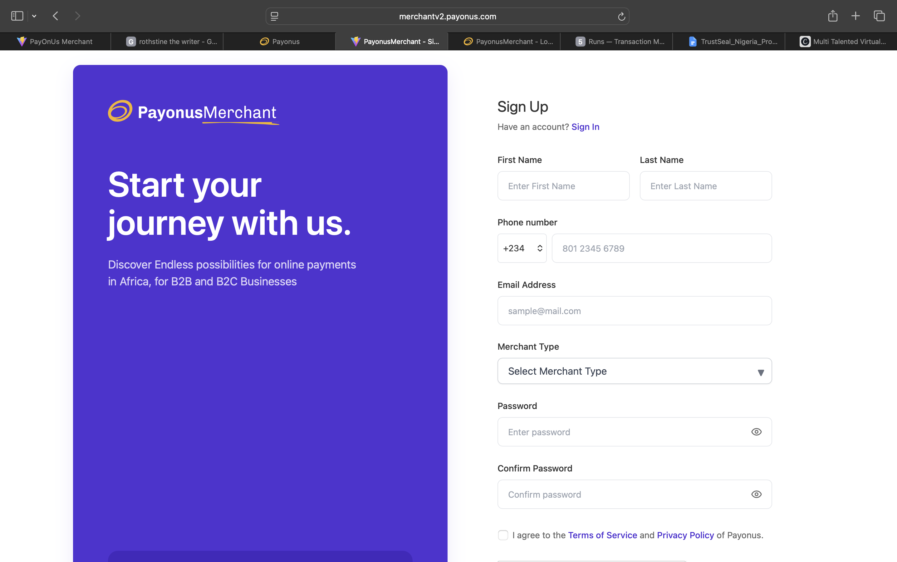
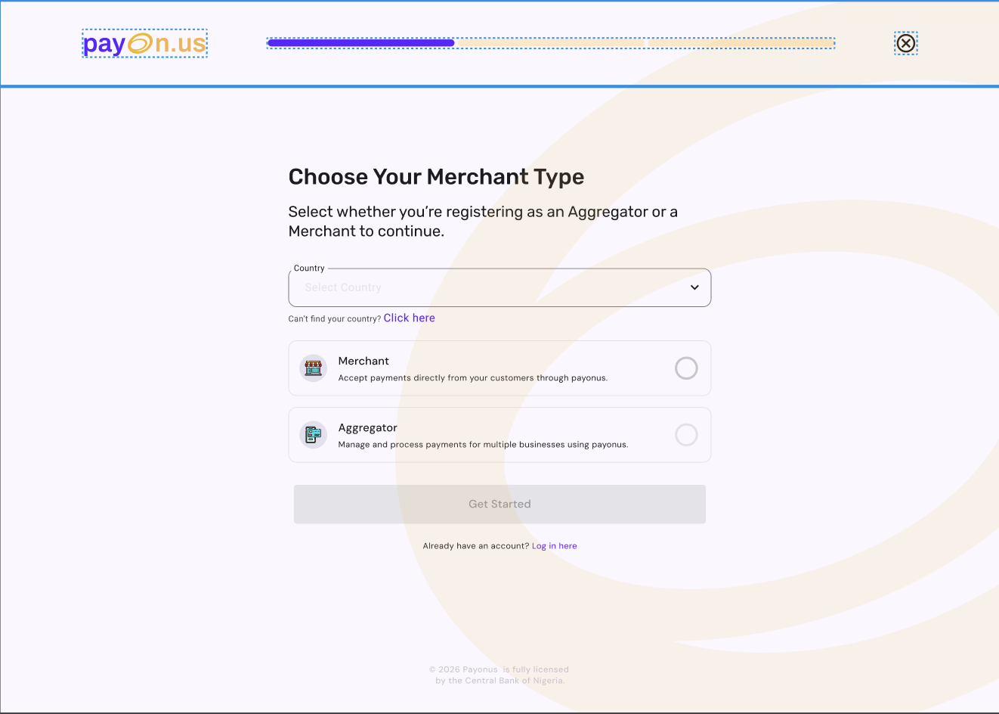
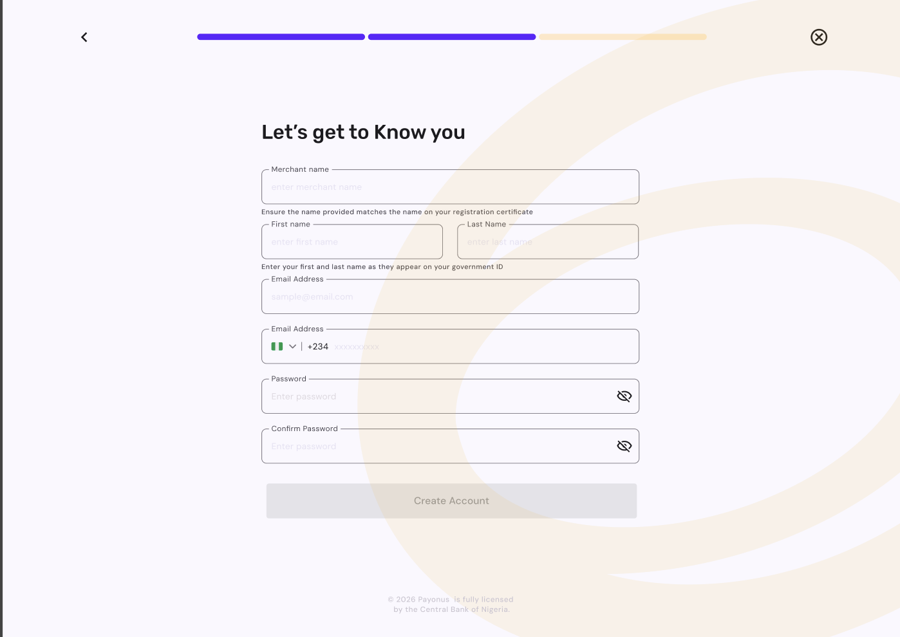
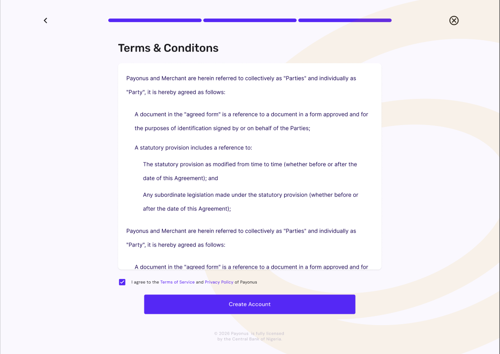
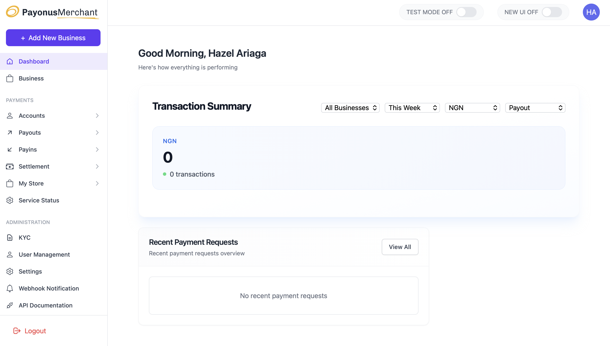
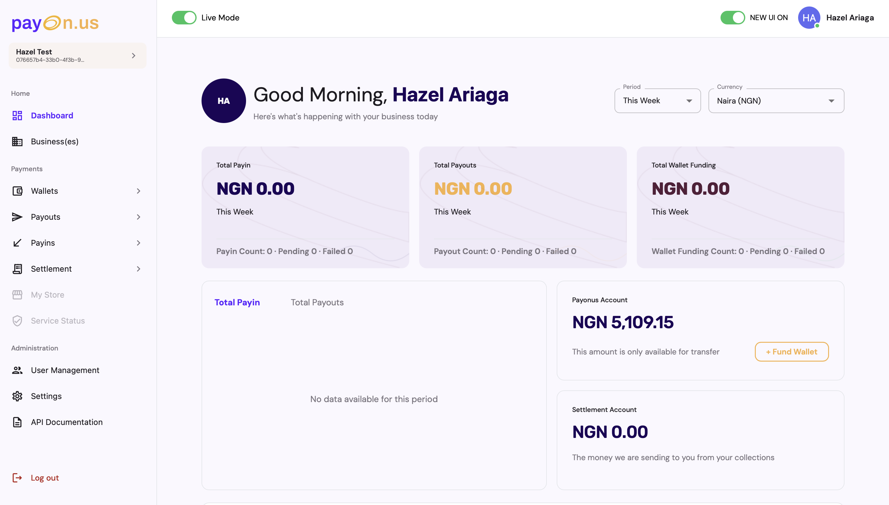

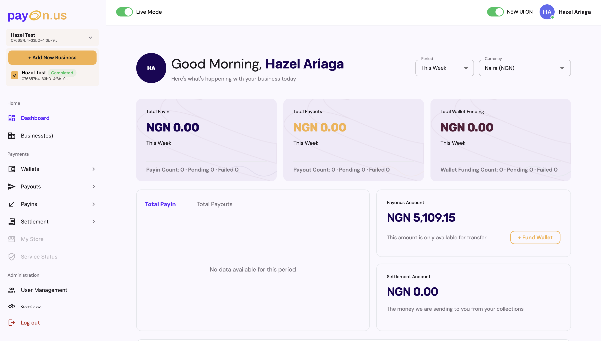
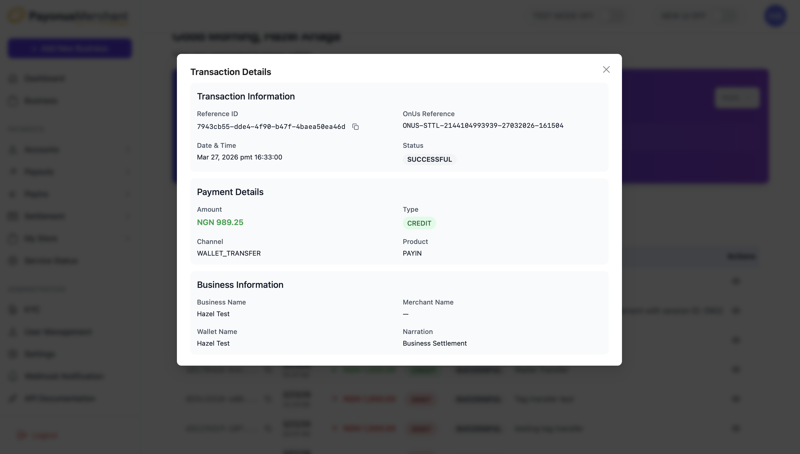
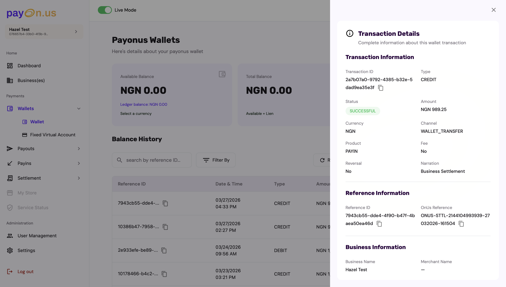
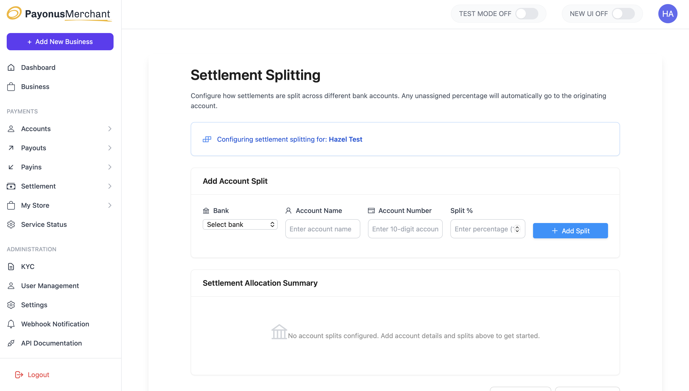
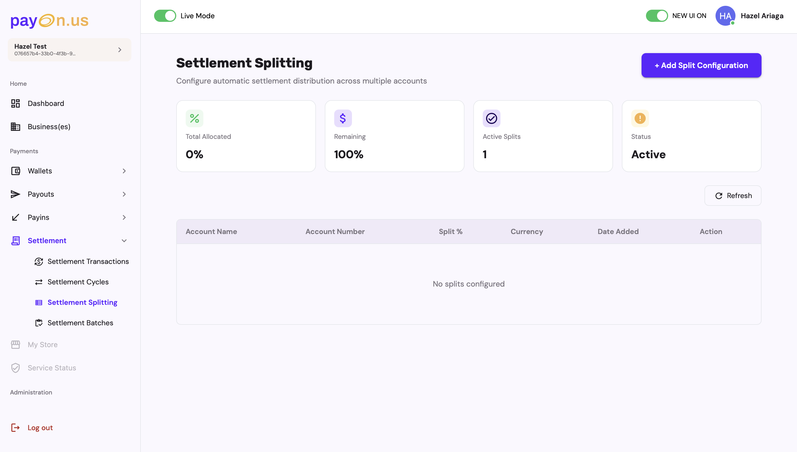
Product ownership, not just interface design.
My work at Payonus extends well beyond the merchant web app redesign. The most significant example is the CEMCS cooperative banking proposal — a self-service cooperative wallet platform with real NUBAN accounts, pitched to enterprise decision-makers as a B2B partnership opportunity for Payonus.
Enterprise proposal process
Led multiple rounds of executive stakeholder revisions, producing PRD and PRS documentation, Q&A prep materials for C-suite sessions, strategic memos on fee allocation and withdrawal thresholds, and go-to-market strategy for the cooperative banking product.
End-to-end product ownership
Requirements gathering, executive stakeholder management, cross-functional documentation — not just interface design. Product management work delivered without a formal PM title, reporting directly to the CTO with expanded scope.
Q3 OKR framework
Built the product organisation's OKR framework for Q3 — defining objectives, key results, and success metrics for the team. The first time structured goal-setting was formalised across the product function.
Brand & business development
Informally carrying brand, marketing, and business development leadership following a manager departure — managing an external content strategist engagement and supervising a marketing intern alongside design and PM responsibilities.
Introducing a discipline, not refining one.
This project was different from every other redesign in my portfolio because there was no prior design to refine. The work wasn't about improving an existing design system — it was about introducing the discipline itself: hierarchy, grouping, plain language, progressive disclosure, to a live regulated fintech product for the first time.
The most important outcome isn't any individual screen. It's that merchants now have a product that respects their intelligence, surfaces what they need to know without making them search for it, and uses language that explains rather than assumes. That's what a first designer on a product actually ships — not a redesign, but a standard.
What I learned
Designing for a regulated fintech without a design system forces you to be precise about every decision. Every component choice has to carry its own weight — there's no shared vocabulary to lean on. That constraint made me a better, more deliberate designer.
What this proves
I can operate effectively in environments where product management, design, and business development responsibilities overlap — and where there's no existing structure to inherit. I build the structure, not just the screens.